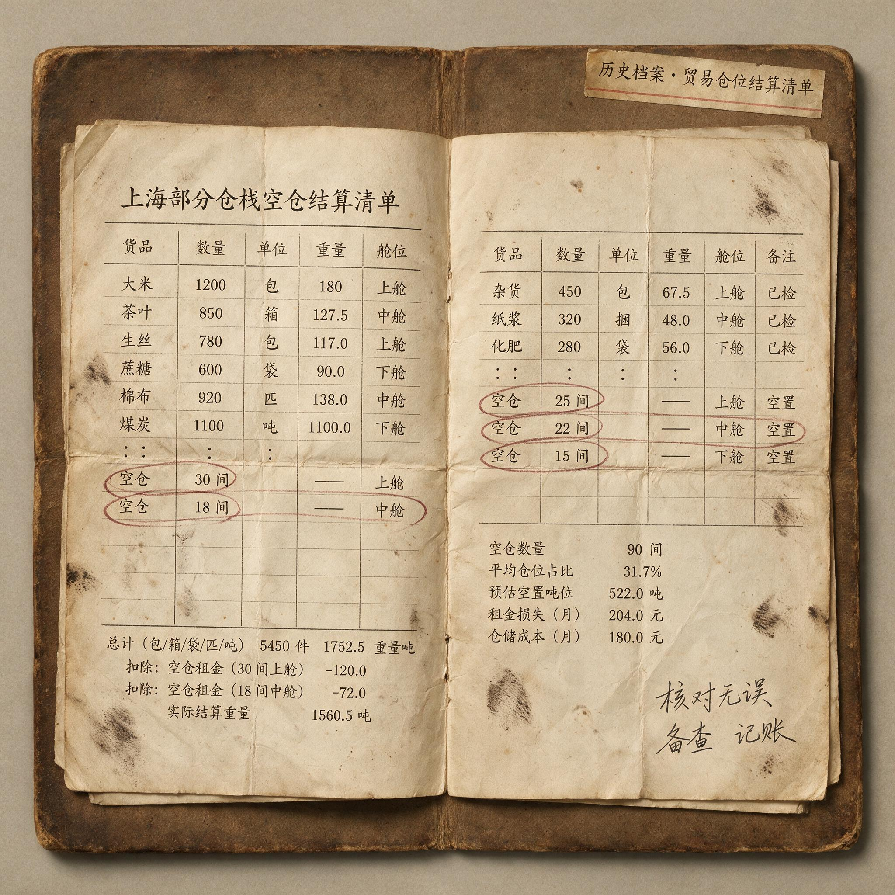

第 26 章
空仓的权重
他把清单翻到背面写下两行字，墨迹未干，市场已替他完成检验。
那是退潮第三日。前周期高标在六天前见顶，断板当日追入的资金被闷了两个跌停，龙虎榜上三家知名游资席位合计割出近三亿。他坐在屏幕前，清单摊在左手边，第十四条用红笔圈过两遍：退潮期禁止任何形式的追高买入。他遵守了。连续三个交易日，账户净值曲线走成一条水平线——不是横盘震荡的那种，是真正的零交易。
第一天空仓时他感到纪律被执行后的轻松，像戒烟者掐掉第一根烟。第二天那种轻松开始变质，变成坐立不安的焦灼。第三天，同花顺弹出一条推送：某只次新股逆势封板，游资席位大举买入。他点开分时图。早盘低开三个点，十点零七分被一笔四千手的大单直线拉起，十点十三分封死涨停。买一席位是他在论坛上见过无数次的那个名字。
他盯着那根几乎垂直的拉升线段，手指悬在键盘上方，肌肉记忆已替他敲出买入快捷键的前三个字母。然后他停住了。不是因为清单。是因为他想起了一个数字。
他曾经做过一次统计。把过去两年间那个知名席位的所有龙虎榜记录拉出来，对照买入日后第五个、第十个交易日的股价位置，按买入时的市场阶段分类标注。统计结果存在一个命名为“不要打开”的文件夹里。一致性买入在退潮期的胜率——以买入后五个交易日内出现正收益为标准——是百分之十七。不是百分之七十，不是百分之五十，是百分之十七。而同一席位在高潮期的胜率是百分之六十一。同一批交易员，同一个决策流程，同一种选股逻辑，换了一个市场阶段，胜率从六成跌到不足两成。
这不是秘密。龙虎榜是公开数据，任何愿意花一个下午做回测的人都能得出类似结论。但愿意花一个下午做这件事的人极少。愿意把自己做出来的结论贴在屏幕边、在每次想下单时先看它一眼的人，更少。他把手从键盘上收回来，重新打开那个文件夹。
里面除了那张胜率统计表，还有一份交割单截图——不是他的，是一个他在营业部见过几面的中年交易者。那人做短线七年，账户从七位数做到六位数，再从六位数加杠杆做到爆仓。爆仓前最后一个月的交割单里，退潮期交易占比百分之七十八。那人在爆仓后发了一条朋友圈，只有六个字：“管不住手，认了。”
“管不住手”是短线圈子里的通用忏悔语。它把亏损归结为一种生理冲动，仿佛交易者的手与大脑之间隔着一道反射弧。但手不会自己下单。驱动手指敲下买入指令的，是一个更深层的认知框架：把空仓视为无所作为，把持仓视为有所作为，并且默认“有所作为”在任何市场环境下都优于“无所作为”。
这个默认在投资史上有一个更古老的版本。二十世纪二十年代，部分非正式足球赛事曾尝试以角球数量作为决胜标准。当一场比赛在常规时间和加时赛后仍未分胜负，裁判会统计双方角球次数，多者晋级。这一规则的逻辑直觉似乎成立：角球意味着进攻压入对方禁区，意味着射门机会的临近，意味着“接近得分”。但角球与得分之间的相关性远低于规则制定者所假设的水平。一支球队可能整场控球率不足四成，仅靠几次反击制造角球；另一支球队可能全程压制，射门十余次被门将扑出，角球数反而落后。用角球数量决定胜负，本质上是用一个与核心目标弱相关的替代指标，取代了对比赛真实进程的判断。
把交易频率等同于盈利能力，是同一个认知陷阱在金融市场中的镜像。交易是手段，盈利是目的。手段与目的之间的相关性并非恒定，它在情绪周期的不同阶段剧烈波动。在高潮期，相关性为正且显著——频繁交易确实带来频繁盈利。在退潮期，相关性转为负——每一笔新增交易都在增加亏损概率。将高潮期观测到的正相关直接外推到全部市场阶段，等于默认角球数在任何比赛中都能衡量球队实力。
这就是为什么绝大多数龙头战法的亏损账户存在同一个结构特征：交易记录中找不到任何一段连续三个交易日以上的空仓期。不是因为他们没有遇到过退潮期——退潮期在每个情绪周期中必然出现，就像足球比赛中必然有攻防转换。而是因为他们在认知层面从未将空仓视为一种合法的仓位选择。在他们的决策框架里，仓位只有两种状态：满仓和选股中。卖出某只股票的同时就在寻找下一只买入标的，资金在账户里停留的时间以分钟计。
空仓不是交易的空白期。它是情绪周期认知中最具信息密度的决策状态。
这个论断需要拆解。首先，“信息密度”指的是什么？一笔买入决策所包含的信息，无非是对某只股票在未来一段时间内上涨概率的判断。这个判断的质量取决于判断者所依据的信息集。在退潮期，市场整体流动性收缩，涨停板次日溢价率骤降，连板高度逐日压缩，板块联动性瓦解。这些信号本身就是信息——它们共同构成了一条明确的信息：当前市场环境不支持追涨策略获得正期望值。空仓是对这条信息的完整接收和精确响应。它不比买入决策“少做了什么”，恰恰相反，它比盲目买入多处理了一组关键变量。
其次，“决策状态”意味着空仓是主动选择的结果，而非被动等待的副产品。等待暗示着未来某个时刻会自然结束等待状态——就像等公交车，车来了就上。但空仓不是等车。空仓是在评估每一辆驶过的车是否值得上、是否安全、是否开往你要去的方向。评估的结果可能是“这辆不行”，也可能是“这辆还行但不是最优”，还可能是“现在上车风险大于收益”。每一次评估都是一次完整的决策循环，只是循环的结论是“不行动”。
不行动本身就是一种行动。在博弈论中，放弃一个负期望值的选项与选择一个正期望值的选项，对长期收益曲线的贡献完全等价。一个赌局：掷硬币，正面你赢一百零一元，反面你输一百元。期望值为正零点五元，参与是理性选择。另一个赌局：正面你赢一百元，反面你输一百零一元。期望值为负零点五元，不参与是理性选择。在第二个赌局中，“不参与”不是一个消极的姿态，它是对赌局规则进行了完整计算后得出的最优策略。退潮期的市场就是第二个赌局。
数据可以把这个判断从定性推入定量。以某段连续二十四个月的交易数据为样本，将全部交易日按情绪周期四阶段分类——分歧、一致、高潮、退潮——统计在每个阶段采取不同仓位策略的账户表现。样本中有一组账户严格执行退潮期空仓规则（定义为退潮期内任何单一交易日持仓市值不超过总资产的百分之五），另一组账户在退潮期内保持满仓或高仓位运作（日均持仓比例超过百分之八十）。前一组账户的年度最大回撤中位数为百分之十二点七，后一组为百分之五十四点三。两者相差四十一点六个百分点。
更值得注意的数据是年化收益率。空仓组的年化收益率中位数为百分之三十一点二，满仓组为百分之九点八。空仓组不仅亏得少，而且赚得多。这个结果初看违反直觉——做得少反而赚得多？机制并不复杂。退潮期的亏损不仅是账面上的数字减少，它从两个维度侵蚀未来的盈利能力。第一，本金的直接损耗。亏损百分之五十需要盈利百分之百才能回本，这是数学上的不对称性——账户回撤每增加十个百分点，回本所需的收益率呈非线性增长。第二，机会成本的叠加。退潮期被套牢的仓位无法释放，当下一个分歧期启动、真正的龙头开始发出买入信号时，套牢者的资金还在上一个周期的废墟里等待解套。他们没有子弹。
空仓者在退潮期结束时拥有完整的现金头寸、未被亏损污染的判断力、以及最重要的——没有被连续止损击溃的心理资本。当分歧期的第一只高标开始试盘，空仓者可以从容评估、择机入场。而满仓者正在盯着自己持仓的亏损数字，计算还要几个涨停才能回本。
这就是空仓的权重。它不是零权重，它是负权重——把仓位降到零，实际上是在为下一个周期的正收益腾出空间、资金和心理容量。

但承认这一点需要克服一种根深蒂固的认知惯性。人类大脑对“行动”的偏好深植于进化史。远古草原上，看到草丛晃动，跳起来跑开的人比坐着不动的人更可能活下来——哪怕草丛晃动的原因只是风。在生存环境中，“宁可错动、不可错过”是优势策略。金融市场不是草原。草丛晃动的频率远高于猛兽出现的频率，每一次跳起来跑开都消耗能量（交易成本、机会成本、心理带宽），而真正的猛兽——趋势性下跌——往往不以草丛晃动的方式预警。将进化遗留的行动偏好带入金融决策，结果是过度交易：把噪声当作信号，把每一次价格波动都视为必须应对的事件。
这种行动偏好在龙头战法的语境中被进一步强化。龙头战法的教学市场——从论坛帖子到线下课程——几乎全部围绕“如何找到龙头”“如何在分歧日上车”“如何识别补涨”展开。买入是永恒的主角。空仓最多被当作一种过渡状态被顺带提及，通常的表述是“没有机会就休息”。这句话的问题在于，“没有机会”这个判断本身就要求一套完整的识别框架，而这套框架恰恰是大多数学习者所缺失的。他们学到的是如何识别“机会”的特征——高标连板、板块联动、竞价超预期——但没有学到如何识别“非机会”的市场环境特征。结果就是他们把每一只高标连板股都当作机会来处理，不论它出现在高潮期还是退潮期。
更致命的是“逆势抓涨停”的幸存者叙事。在任何一个退潮日，市场里总有涨停的股票。总有某个席位在退潮期买入并获利出局。这些案例被截图、被转发、被配上“别人恐惧我贪婪”的文字在群里传播。它们构成了一个精心筛选过的样本集：只展示退潮期交易的成功案例，系统性隐藏失败案例。这就像只展示点球大战中后罚球队逆转获胜的精彩瞬间，却隐藏了更多后罚球队因心理压力而崩盘的案例。
失败案例去哪了？它们安静地躺在龙虎榜数据库里，任何人都可以查到——那个在退潮第三日逆势封板的席位，在同一标的上的后续操作往往是割肉离场。有一个细节可以在此处展开。
某年某月某日——日期不重要，重要的是它处于一个清晰可辨的退潮周期中：前一个主线板块的高标龙头已在六个交易日前见顶，此后连续四根阴线，板块内跟风股跌去百分之二十以上。当日龙虎榜显示，一家以“格局”著称的游资席位大举买入某只试图逆势拉升的个股，买入金额三千七百万元，占当日该股总成交额的百分之九点二。买入逻辑不难推测：该股当日早盘低开后迅速翻红，十点前封板，分时图走势凌厉，具备“逆势龙头”的全部视觉特征。
五天之后，同一席位在同一标的上的龙虎榜记录变为卖出两千九百万元。亏损约八百万，亏损幅度约百分之二十一点六。
这就像在点球大战中，后罚球员在巨大心理压力下踢失关键点球，其失误往往被归咎于“技术变形”，但根源在于规则本身带来的结构性压力。
这并非孤例。在随后两周内，该席位在退潮期中操作的另外两只标的同样以亏损告终，合计净亏损超过两千万元。
这些数据是公开的。任何交易者都可以在龙虎榜数据库中检索到同一席位在同一标的上的买入和卖出记录，计算盈亏。但极少有人做这件事。
因为做这件事意味着要面对一个令人不安的事实：那些被崇拜的游资大佬也会犯错，也会在退潮期亏钱，他们的“格局”有时只是亏损后不愿止损的另一种说法。而更令人不安的推论是：如果连资金体量、信息优势、操盘经验都远超普通交易者的游资席位都在退潮期系统性亏损，那么普通交易者在退潮期盈利的概率有多大？
答案就在那个百分之十七里。这就像在足球领域，即便强如巴塞罗那，也可能在点球大战中输给采用保守战术的弱队——根据欧足联多年积累的数据样本，球队的实力与点球大战的胜负之间并不存在显著关联。
现在可以回应一个必须被正视的反方论点。有一种观点认为，龙头战法亏损的主因是执行纪律不严与资金管理失控，情绪周期只是事后归因的叙事装置——任何策略只要严格执行都能盈利。这个论点包含一个正确的内核和一个错误的推论。正确的内核是：执行纪律和资金管理确实是亏损的直接原因。错误的推论是：因此情绪周期不重要。
把亏损归因于“纪律不严”就像把溺水归因于“没有呼吸到空气”——它在技术上是正确的，但没有回答溺水者为何会落入水中。纪律不严不是随机发生的。它最容易发生在交易者无法识别当前市场阶段已发生切换的时刻。高潮期的“买入即赚”经验在大脑中形成了强化的神经回路，当市场转入退潮期，价格走势出现类似高潮期的某些局部特征——比如某只股票逆势拉升——大脑会自动激活相同的回路，触发买入冲动。此时所谓的“纪律不严”，本质上是认知框架未能及时更新的结果。
情绪周期并非事后归因的叙事工具。它是一种事前可观测、事中可验证、事后可回测的市场状态分类体系。分歧期的特征是连板高度断层、板块轮动加速、涨停次日溢价不稳定。一致期的特征是龙头明确、板块联动紧密、跟风股同步上涨。高潮期的特征是补涨股疯狂、龙头加速赶顶、低位挖掘泛滥。退潮期的特征是龙头见顶后无人接力、涨停板次日闷杀频发、连板高度逐日压缩。这些特征都是盘面原生信号，不需要任何学术术语就能识别。问题不在于情绪周期是否存在——它在每一个短线交易者每天盯盘的四小时内都在实时展开。问题在于交易者是否愿意将情绪周期的识别纳入决策流程，并赋予它否决权。
否决权的意思是：即使某只股票符合清单上的所有买入条件——形态完美、量价配合、题材正宗、席位加持——如果当前市场处于退潮期，清单最底部的红色条款将覆盖以上所有绿灯。这就是第25章中那份清单的最不可妥协的条款：强制空仓。
它之所以不可妥协，不是因为它来自某个权威的教导，而是因为它从无数个血亏案例中长出来。每一个在退潮期逆势操作并遭受重大亏损的交易者，都在事后用账户净值曲线的深坑为这条条款投票。这些投票者中，很多人再也没有回到市场。
他们的账户变成了休眠账户，他们的资金变成了沉默成本，他们的故事不会被写入任何战法教材。这就像足球规则中，点球大战的引入是为了取代抽签这种更不公平的方式，但即便如此，其规则本身（如罚球顺序）仍存在结构性缺陷，需要不断调整（如尝试ABBA制）以寻求更优解。
强制空仓条款的执行难度不在于认知层面。认知层面的论证已经足够充分：退潮期交易的负期望值、空仓组的统计优势、幸存者偏差的筛选机制——任何一个具备基本统计素养的人都能理解这些论证。执行的难度在于承受“什么都不做”的心理代价。这种心理代价，在竞技体育中同样存在——点球大战的支持者认为，在极度紧张的氛围中保持动作精准、情绪稳定的能力，本身就是高水平竞技所需要的素质之一。交易亦然。
这个代价由三个部分构成。
第一是踏空焦虑。退潮期并非每天都跌。中间会有反弹日、会有逆势涨停股、会有看似完美的技术形态出现。空仓者在这些时刻必须承受一种尖锐的不确定感：这次会不会不一样？这只股票会不会真的穿越周期？我是不是正在错过一个改变账户命运的机会？这种焦虑的强度不亚于持仓亏损时的痛苦——在某些情况下甚至更强，因为持仓亏损至少还有“我在做点什么”的心理安慰。这就像点球大战中，后罚球员在等待主罚时所承受的“不进则负”的绝境压力，其心理负荷远高于先罚者。
第二是相对剥夺感。交易者不是孤立存在的。他们在微信群、论坛、营业部大厅里构成一个参照群体。当退潮期中有人在群里晒出“逆势抓涨停”的交割单——不论这张交割单是否完整展示了同一账户在同一时期的所有亏损交易——空仓者会感受到一种被剥夺的刺痛。“别人在赚钱而我在等待”，这种感觉比独自亏损更难忍受。
有一个场景值得被精确描述：交易者空仓的第三天晚上，打开手机看到群里有人发了一张截图——某只股票今日涨停，发图者配文“退潮期照样吃肉”。交易者的手指悬在屏幕上方，打了一行字又删掉。他想说的是：你上个月退潮期亏了多少？
但他没有发出去。因为他知道这句话一旦发出，就会被解读为嫉妒、酸葡萄、自己踏空的恼羞成怒。他关掉群聊，把手机屏幕朝下扣在桌上。房间很安静。净值曲线在电脑屏幕上是一条水平线——今天又是零交易。这条水平线在别人看来是无所作为的证明，在他自己看来是一道正在承受却无法言说的压力测试。这种压力，与客场球队在点球大战中承受主场球迷嘘声的心理环境有相似之处。
第三是同行收益比较带来的自我怀疑。当空仓者看到同期其他交易者——可能是朋友、可能是群里活跃的ID、可能是营业部里坐在隔壁工位的人——仍在频繁交易且偶尔获利时，“空仓是正确的”这个判断开始松动。怀疑从裂缝中渗入：也许是我判断错了？也许退潮期已经结束了只是我没看出来？也许我所谓的纪律只是在为自己的胆怯找借口？
这种怀疑正是第25章结尾处写在清单背面的那行字所指向的东西。“怀疑需要被校准”，但校准本身依赖于执行者已不再信任的判断力——这是一个死循环。打破死循环的唯一方法是引入外部参照系：不是别人的交割单——那些交割单通常经过选择性展示——而是完整的统计数据。回测数据。龙虎榜盈亏追踪。账户净值曲线的对比图。这就像足球规则的演进，从掷硬币、抽签到点球大战，再到尝试ABBA制，都是为了引入更客观、更公平的外部参照系来决出胜负。
有一张对比图值得在此处被描述。两条净值曲线绘制在同一坐标系中，横轴是时间（涵盖两个完整的情绪周期），纵轴是账户净值（以百分比表示）。第一条曲线像心电图一样剧烈波动：上升段陡峭（对应高潮期的盈利），下降段同样陡峭甚至更深（对应退潮期的亏损），整体趋势缓慢向下倾斜。第二条曲线呈现阶梯状：上升段与第一条曲线同样陡峭甚至更陡（因为它在新周期启动时拥有完整子弹），但在退潮期呈现为平直的水平线段——空仓平台期。两个周期结束后，第一条曲线的净值为初始值的百分之六十三；第二条曲线为百分之一百八十四。
这两条曲线的差异不是选股能力的差异——假设两者在分歧期和一致期的选股能力完全相等。差异纯粹来自退潮期的仓位选择。第一条曲线的交易者在退潮期继续操作，将高潮期积累的利润全部回吐并侵蚀本金；第二条曲线的交易者在退潮期空仓等待，保住了利润并保留了子弹。
这张图如果挂在每一个短线交易者的屏幕旁边，退潮期的交易量会下降一半以上。但它不会被挂出来。因为它太朴素了，朴素到不具备传播性。它没有抓人眼球的涨停分时图，没有传奇游资的席位代码，没有“月翻倍”的叙事张力。它只是一条平直的线段和一条向下的线段之间的对比——而平直是世界上最难被贩卖的东西。
强制空仓条款从血亏案例中长出来的过程，可以用一个具体的回溯来呈现。某位交易者在经历了连续两次退潮期重亏之后——第一次亏掉全年利润的百分之六十，第二次亏掉剩余本金的百分之四十——开始系统地复盘自己的交割单。他把每一笔亏损交易的日期标注在情绪周期的时间轴上，发现了一个规律：百分之八十二的亏损发生在退潮期和高潮末期。高潮末期的亏损来自追高补涨股（第24章已经拆解过这个陷阱），退潮期的亏损来自试图捕捉“穿越周期的龙头”。
他进一步发现，如果把自己在退潮期的所有交易全部删除——不是删除亏损交易保留盈利交易，而是删除全部交易——账户净值曲线将发生根本性改变。回撤幅度大幅收窄，年化收益率显著提升。这个发现让他产生了一种复杂的情绪：一方面是释然——终于找到了亏损的结构性原因；另一方面是懊悔——那些亏损本来完全可以避免。他在交割单的最后一行写下了一句话：“退潮期禁止交易。”这句话后来变成了清单上的红色条款，成为整个决策流程中最不可妥协的一环。这就像足球比赛中，当一种规则（如角球决胜）被证明存在缺陷时，就需要引入新的规则（如点球大战）来修正。
这不是一个孤例。每一个经历过完整牛熊周期的短线交易者，如果诚实地复盘自己的交易记录，都会发现类似的规律。区别在于有人选择面对这个规律并据此修改行为，有人选择继续相信“下一次退潮期我能抓到逆势龙头”。后者通常会在下一个退潮期中追加更多证据来证明前者的正确。
空仓在情绪周期四阶段中的权重分配需要被精确地刻画出来。它不是均匀的——不是在所有阶段空仓都具有同等价值。
分歧期的空仓是等待确认信号的机会成本。这个阶段的市场特征是方向未明：旧周期龙头已经退位，新周期龙头尚未确立。盘面上会出现多只高标同时竞争、板块轮动加速、涨停次日溢价不稳定等现象。此时空仓的成本是可能错过先手启动机会——某只股票在分歧中率先封板并最终成为新周期龙头。但此时空仓的收益是避免在方向不明时押注错误的标的——那些在分歧期中试图卡位但最终被淘汰的股票，往往会在次日直接闷杀。分歧期空仓是一种取舍：放弃抢先手的可能性，换取等待确认信号的确定性。
一致期的空仓是踏空风险最大化阶段。龙头已经明确、板块联动紧密、跟风股同步上涨、涨停次日溢价稳定且可观。在这个阶段保持空仓意味着系统性错过整个周期中确定性最强的盈利窗口。除非交易者的策略明确排除了追涨模式（比如只做首板或只做低吸），否则一致期空仓通常不是最优选择。
高潮末期的空仓是利润保护机制。龙头加速赶顶、补涨股疯狂拉升、低位挖掘泛滥、论坛上充斥着“下一个XX”的帖子——这些信号共同指向一个事实：周期的顶部正在形成或已经形成。此时空仓意味着放弃最后一段可能存在的加速利润（如果龙头继续超预期），但换取的是避免顶部反转时的大幅回撤。高潮末期空仓的核心逻辑是风险收益比的恶化——继续持仓的潜在收益已经远小于潜在亏损。
退潮期的空仓是唯一正确的仓位选择。“唯一正确”不是一个修辞上的强调，它是基于统计数据的严格判断：在退潮期内任何非空仓策略的期望值均为负，且负期望值的幅度超过交易成本所能覆盖的范围。这不是说退潮期内没有任何股票上涨——总会有逆势涨停的个股存在。而是说从概率上讲，参与退潮期交易的长期结果必然是亏损。这就像在点球大战中，后罚球队虽然也有获胜的可能，但统计数据显示先罚一方占据较大优势，因此规则本身（如罚球顺序）就构成了一个结构性的不利因素。
这四个阶段的权重分配可以总结为：分歧期空仓是战术选择（取决于个人策略偏好），一致期空仓通常是策略失误（除非策略明确排除此阶段），高潮末期空仓是风险管理（利润保护优先），退潮期空仓是生存法则（不参与负期望值博弈）。
多数亏损账户的问题在于他们把四个阶段的空仓权重全部压缩为零。他们不区分阶段，或者说他们不认为阶段区分会影响交易结果。在他们的认知中，“找龙头—买龙头—卖龙头—找下一个龙头”是一个连续循环，市场的情绪温度变化只是背景噪音而非决策变量。这种认知在一致期和高潮期不会暴露问题——因为在这些阶段，“买入即赚”的经验不断被强化。问题只在退潮期暴露，而暴露时往往已经造成了不可逆的账户损伤。
有一个机制层面的解释值得展开：为什么退潮期的亏损往往特别大？这与流动性收缩的不对称性有关。在高潮期，市场整体流动性充裕，涨停板次日通常有充足的买盘承接，即使判断失误也有相对温和的退出机会。
在退潮期，流动性从市场边缘向中心收缩——资金从跟风股撤出、从补涨股撤出、从题材股撤出，集中到极少数核心标的上（甚至完全撤出股票市场）。这种收缩导致大多数股票的买盘深度急剧下降：一个在高潮期可以轻松容纳五千万卖出盘的标的，在退潮期可能一千万的卖单就能砸开涨停板甚至砸到跌停。这就像在点球大战中，随着轮次推进，后罚球员面临的心理压力和“不进则负”的绝境感会急剧放大，导致动作变形、失误概率上升。
交易者在高潮期形成的仓位管理和止损预期（“大不了亏三个点出来”）在退潮期完全失效。实际发生的往往是：早盘低开两个点想等反弹再走→十点前继续下探五个点→午后封死跌停→次日继续低开。亏损从预期的百分之三迅速扩大到百分之十五以上。这就是为什么退潮期的亏损不仅频率高而且单笔亏损幅度大——流动性环境本身放大了每一笔错误交易的代价。空仓者在退潮期避开的不仅是下跌本身，还有流动性收缩带来的超额亏损风险。
现在回到开篇那个场景：交易者盯着同花顺推送的逆势涨停股，手指悬在键盘上方。他知道那个知名席位的退潮期胜率只有百分之十七。他知道自己的交割单复盘显示百分之八十二的亏损发生在退潮期和高潮末期。他知道账户净值曲线对比图中那条平直的线段最终跑赢了剧烈波动的那条。他知道所有这些。
但他的手指仍然悬在那里。
因为知道和做到之间的距离，就是清单背面的那行字——“清单能过滤掉我的冲动但过滤不掉我的怀疑”——所要测量的东西。怀疑来自一个无法被数据完全消除的来源：每一个退潮期都有例外。总有某只股票真的穿越了周期成为下一个龙头。总有某个席位在退潮期中逆势大赚。总有某个交易者在群里晒出令人艳羡的交割单。这些例外的存在使得“退潮期一律空仓”这个规则永远无法被完全证实——它只能被概率性地支持。这就像点球大战中，尽管先罚一方有统计优势，但后罚球队逆转获胜的案例依然存在，这些例外使得“后罚必输”的论断无法成立，但也无法改变先罚优势的统计现实。
而人类大脑对概率性支持的处理方式与对确定性规则的处理方式截然不同。确定性规则只需要一次理解就能被执行（“红灯停”不需要每次过马路时重新论证）。概率性规则需要在每一次面临决策时重新进行风险评估——而风险评估本身消耗认知资源、容易受到情绪干扰、且在大脑疲劳时倾向于向行动偏好倾斜。这就像点球大战的规则，尽管存在争议（如罚球顺序），但因其相对简单、直观，仍被广泛采用；而更复杂的规则（如ABBA制）因难以理解和执行，最终被废止。
这就是为什么强制空仓条款必须以“不可妥协”的方式写入清单——不是因为它不需要论证，而是因为如果允许每次临场论证，论证的结果大概率会被行动偏好捕获。不可妥协意味着：当市场阶段被判定为退潮期时，所有其他买入条件自动失效。不论个股形态有多完美、不论席位信号有多强、不论盘中拉升有多凌厉——“退潮期”三个字足以否决一切。这就像足球规则中，点球大战的流程（如五轮基础轮次、突然死亡阶段）是固定的，不因比赛进程或球队特点而改变，以确保公平性和可执行性。
这种否决权的执行需要一种特殊的心理素质：承受“什么都不做”的代价而不崩溃。这种素质，在竞技体育中被称为“大心脏”，在交易中则体现为纪律的绝对性。
崩溃的形式有很多种。最常见的一种是在连续空仓几天后看到一个“完美机会”，用“这次不一样”说服自己破例一次，然后被市场再次教育。次常见的一种是在空仓期间不断质疑自己的判断——“也许我判断错了其实退潮期已经结束了”——然后提前入场被套。还有一种更隐蔽的形式：虽然管住了手没有买入，但把大量时间花在盯盘和复盘上，试图找到“退潮期中的确定性机会”，结果消耗了大量心理带宽却一无所获——这种形式虽然没有直接造成金钱亏损，但造成了注意力亏损和判断力损耗。这就像点球大战中，球员如果过度思考罚球动作或受外界干扰，反而容易失误。
真正的空仓执行不仅是账户上的零持仓，还包括注意力的战略性收缩。退潮期的盘面信息噪音比例极高——价格波动大多是随机游走或诱多陷阱而非有效信号。花四个小时盯着一堆无效信号试图从中提取规律，就像在一片静态中试图听出一段旋律——你的大脑会自动“补全”出根本不存在的模式。战略性收缩意味着：确认进入退潮期后，减少盯盘频率、关闭盘中推送、不参与群内关于“逆势机会”的讨论、将注意力转移到复盘总结或其他非交易活动上。这就像足球队在非比赛期间进行针对性训练和战术演练，而不是无休止地进行高强度对抗赛。
这不是消极逃避，而是主动保护判断力不被噪声污染。判断力是一种有限资源。它在每一次决策中被消耗，在高强度盯盘中被磨损，在连续止损后被摧毁。空仓期应该是判断力的恢复期而非消耗期——这一点被绝大多数交易者忽略。他们以为空仓就是“不买股票”，却没有意识到如果空仓期间仍在高强度盯盘和频繁讨论“机会”，判断力不仅没有恢复反而在持续损耗。等到下一个分歧期真正启动时，他们的判断力已经处于枯竭状态——这正是为什么很多交易者在新周期启动时反而犹豫不决、不敢扣动扳机的原因之一。这就像运动员在赛季间歇期需要休息和调整，以恢复体能和竞技状态。
空仓者手握完整子弹等待下一个分歧期的信号。子弹是完整的——资金没有受损、心理没有被连续止损击穿、判断力没有被噪声磨损。但当信号真正出现时——某只高标在分歧中封板、板块开始联动、竞价出现超预期信号——他的手指是否能像计划中那样稳定地扣下扳机？这就像点球大战中，球员在完成准备后，能否在巨大压力下稳定地执行罚球动作。
这是一个被严重低估的问题。龙头战法的教学市场几乎全部围绕买点展开：如何在分歧日识别龙头、如何在竞价阶段抢先手、如何在封板瞬间打板确认。这些教学内容默认学习者已经解决了“敢不敢买”的问题——但事实上，“敢不敢买”恰恰是经历了退潮期空仓之后最难跨越的心理障碍。这就像足球训练中，只强调射门技术，却忽略了在点球大战这种高压环境下保持心理稳定和动作一致性的训练。
因为空仓不仅保住了子弹，也积累了怀疑。每一次管住手不买入的过程都是一次对自身冲动的否定——连续十次、二十次否定之后，“否定”本身变成了惯性。“这个信号够不够好？”“会不会又是诱多？”“上次那个看似完美的信号最后不是闷杀了吗？”——这些怀疑在新周期启动时不会自动消失。它们会叠加在买入决策上，让扣动扳机的手指变得沉重。这就像点球大战中，后罚球员如果前几轮连续看到队友罚失，其心理压力会累积，导致后续罚球动作变形。
空仓的执行难题从认知层面推进到了行动层面：你保住了子弹，但你还有勇气开枪吗？这就像点球大战中，球员技术过关，但能否在关键时刻顶住压力、稳定发挥，才是决定胜负的关键。
他关掉同花顺的推送窗口，把清单翻回正面。第十四条的红圈在台灯下显得颜色更深了一些。电脑屏幕上的净值曲线仍然是那条水平线——第四天空仓。窗外有汽车驶过的声音。他拿起笔在清单底部又加了一行字：“空仓保住了子弹。”然后停了一下，继续写：“子弹的价值取决于开枪的时机和命中率。”
他放下笔看着这两句话。一个问题悬在它们上方：时机识别和命中率维持的能力本身会受空仓时长的影响吗？如果会，影响的方向是什么？这就像足球比赛中，球员在长时间休赛期后，其比赛感觉和临场状态是否需要重新调整和适应。
这个问题没有一个简单的答案。它指向的不是空仓本身的对错——那个问题已经被数据回答了——而是空仓之后的事情。空仓不是终点。它是两个周期之间的桥梁。桥梁的质量决定了你能携带多少战斗力抵达对岸。但抵达对岸之后等待着你的不是胜利——等待着你的是一系列新的决策：什么时候确认分歧期结束？什么时候确认新周期启动？第一个信号出现时是试探性买入还是重仓出击？买入之后什么时候卖出？每一个决策都需要判断力。而判断力正是那座桥梁上最容易磨损的货物。这就像点球大战结束后，球队需要总结经验、调整心态，为下一场比赛做准备。
每一个决策都需要判断力。而判断力正是那座桥梁上最容易磨损的货物。
他关掉电脑屏幕前最后看了一眼净值曲线上的水平线段。它安静地躺在那里，像一条尚未被拉起的瞄准基线。